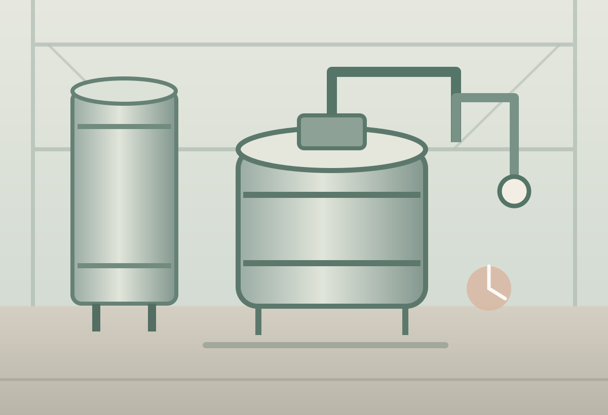

Power
Plant and supporting machinery for generation and industrial power operations.
Engineering-led · Quality-focused · International sourcing
Glassic sources plant and machinery through international supplier relationships, guided by technical requirements and a clear focus on quality.

Engineering insight · Quality focus
Glassic’s founder brings an engineering background to the business, supported by a technically capable team. We work with international suppliers and assess equipment opportunities against the application, specifications, operating conditions and quality requirements for the job.
Our approach and experienceFrom requirement to delivery
We start with the application and operating context: required duty and capacity, process compatibility, site and utility constraints, specifications, condition, documentation and delivery needs. That technical brief helps guide equipment sourcing and supply discussions.
Our engineering perspective and trading experience support practical coordination from enquiry through supply and delivery, with clear communication at each step.
How we workSupporting industry in Pakistan and beyond
Plant and supporting machinery for generation and industrial power operations.
Equipment opportunities for process, production and material handling needs.
Plant machinery considered against process requirements and operating conditions.
Machinery sourcing and supply aligned with production and facility requirements.
Equipment for industrial processing requirements, assessed for the job in hand.
Other Glassic business lines
Our standard
We bring engineering understanding to supplier discussions, equipment specifications and delivery coordination, with attention to quality at each stage of the process.
From the Glassic journal
Notes on where things come from, the people behind them, and the details that make a difference.